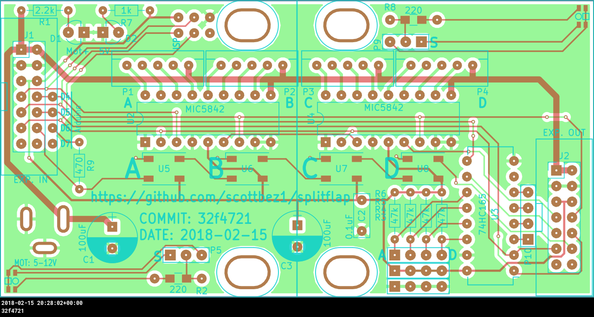

splitflap
DIY split-flap display by Scott Bezek

This is a work in progress split-flap display. Each module can flip between 40 unique characters: letters, numbers, and a few symbols. Multiple modules fit perfectly alongside each other to build bigger displays.
The primary design goal was to make something that's possible to fabricate at home in small or single quantities and can be customized and built by an intermediate hobbyist at a reasonable price. This meant using widely available materials and avoiding any tooling with a high upfront cost.
Following that philosophy, the design uses PVC ID badge cards for the flaps (rather than custom die-cut plastic), store-bought vinyl stickers for the letters, and is driven by an ubiquitous and cheap 28BYJ-48 stepper motor. Even the enclosure, spool, and gears, which are all made from laser-cut MDF, can be easily ordered online.
This design is currently at a prototype stage. The source code in the git repo was able to produce a working prototype (with some manual modifications to correct for slight errors/omissions), but I wouldn't necessarily recommend building your own quite yet, until there are fewer bugs, better documentation, and an improved instruction guide.
All of the designs are open source. The 3d model is built using OpenSCAD, the driver electronics board is designed in KiCad, and the driver firmware is written using Arduino.
Most of the supporting materials, like the schematic, bill of materials, PCB gerbers, and even the interactive 3D rendering seen above are generated automatically as the design changes, using Travis CI. This way you can always see the latest designs, even without having to check out the git repo or install any software yourself.
I'd love to hear your thoughts and questions about this project, and happy to incorporate any feedback you might have into these designs! Please feel free (and encouraged) to open GitHub issues, email me directly, reach out on Twitter, and get involved in the open source development and let's keep chatting and building together!
The vast majority of this project is licensed under Apache v2 (see LICENSE.txt for full details).
Copyright 2015-2016 Scott Bezek and the splitflap contributors
Licensed under the Apache License, Version 2.0 (the "License");
you may not use this file except in compliance with the License.
You may obtain a copy of the License at
http://www.apache.org/licenses/LICENSE-2.0
Unless required by applicable law or agreed to in writing, software
distributed under the License is distributed on an "AS IS" BASIS,
WITHOUT WARRANTIES OR CONDITIONS OF ANY KIND, either express or implied.
See the License for the specific language governing permissions and
limitations under the License.
{kind=link}